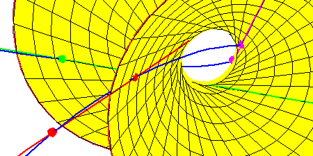
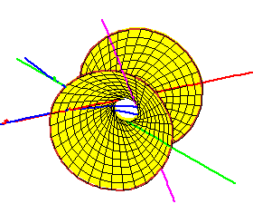

The Fourth Secant Line
The Fourth Secant Line
Now consider a fourth line secant to the rational normal curve along a
disjoint interval.
For example, along the arc between the red points and
magenta points as shown.
From this closeup view, we see that every such secant line meets the
hyperboloid in two points, which gives two
real lines meeting the four given secant lines, and is consistent with
the Secant Conjecture.

